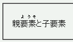

フォントサイズが14〜16pxのとき、ルビベース（rb要素）2文字、ルビ文字（rt要素）3文字の組み合わせのときにルビが正しい位置に表示されない。
※OS10.3上のMacIE5.2では14pxの場合だけこの不具合が発生するそうです。
<p style="font-size:16px;">親<ruby><rb>要素</rb> <rp>（</rp><rt>ようそ</rt><rp>）</rp></ruby>と子要素</p>
親
バグが発生するとされている、rb要素2文字とrt要素3文字の組み合わせです。文字サイズを16pxに固定しています。
WinIE6.0での表示（互換モード）
ブラウザのデフォルトフォントサイズを14〜16px以外の値に設定しておけば、閲覧者側でバグをある程度回避できます。ページ制作者は、少なくともルビが含まれる要素の文字サイズを14〜16pxで固定しないようにしてください。
MacIE5.0〜5.2で不具合が発生するそうです。